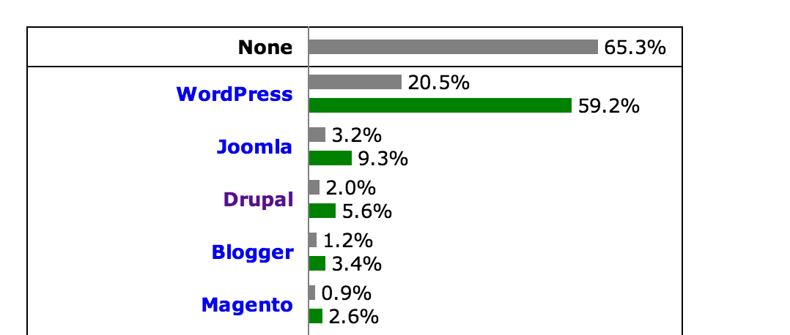

Költöztessük oldalunkat Drupalra
#dh2013
Segevári Dávid
(segi)
CMS használat
w3techs (2013.11.10)
Migrate
Migrate extras
Forrás típusok
- Másik adatbázisból
- XML
- JSON
- CSV
MigrateSource
MigrateDestination
MigrateMap
MigrateFieldMapping
Ültessük át a gyakorlatba
- Felhasználók
- Felhasználóknak plussz extra mezők
- Minden felhasználó Profile 2-es profilja
- A profile 2 field collection-t tartalmaz
- Csatolható fájlok
Első lépések
- Létrehozzuk a modult
- Definiáljuk az osztályakat a hook_migrate_api()-val
- a .module fájl helyett mymodule.migrate.inc-ben
- minden osztályt külön .inc fájlba kell létrehozni és az .info fájlban files[]-al megadni
hook_migrate_api()
/**
* Implements hook_migrate_api().
*/
function mymodule_migrate_api() {
return array(
'api' => '2',
'groups' => array(
'test_migrate' => array(
'title' => 'This is just a test module',
'description' => 'This is the description of test module',
),
),
'migrations' => array(
'TestModuleUser' => array(
'class_name' => 'TestModuleUserMigration',
'group_name' => 'test_migrate',
),
'TestModuleUserProfile' => array(
'class_name' => 'TestModuleUserProfileMigration',
'group_name' => 'test_migrate',
),
),
);
}
Nézzük egy kis kódot..
class TestModuleUserMigration extends Migration {}
class TestModuleUserMigration extends Migration {
public function __construct($arguments) {
$this->arguments = $arguments;
parent::__construct();
}
Nézzük egy kis kódot..
$this->map = new MigrateSQLMap($this->machineName,
array(
'user_id' => array(
'type' => 'int',
'unsigned' => TRUE,
'not null' => TRUE,
'description' => 'Account ID.',
),
),
MigrateDestinationUser::getKeySchema()
);
Kapcsolódjunk a migrálandó adatbázishoz
$databases = array (
'default' =>
array (
'default' => array (
....
),
'migrate' => array (
'database' => 'source_db',
'username' => 'username',
'password' => 'pass',
'host' => 'localhost',
'port' => '',
'driver' => 'mysql',
'prefix' => '',
),
),
...
Nézzük egy kis kódot..
$query = Database::getConnection('migrate')
->select('netsystem_users', 'nu')
->fields('nu', array(
'user_id',
'user_nev',
'user_login',
....
$this->source = new MigrateSourceSQL($query);
$this->destination = new MigrateDestinationUser(array('md5' => TRUE));
Source -> Destination
$this->addSimpleMappings(array('phone_number', 'email_address'));
$this->addFieldMapping('pass', 'user_passwd');
$this->addFieldMapping('created')
->defaultValue(REQUEST_TIME);
$this->addUnmigratedDestinations('age', 'sex', 'hair_color');
Hogyan kapcsoljam össze a profilt a létrejött felhasználóval?
this->addFieldMapping('uid', 'user_id')
->sourceMigration('TestModuleUser');
$this->dependencies = array('TestModuleUser', 'TestModuleUserFile');
A kapott adatok módosítása
- prepareRow($row)
- prepare($entity, stdClass $row)
- complete($entity, stdClass $row)
- createStub()
- $this->addFieldMapping('created', 'create_date')->callback(array($this, 'convertDate'))
Összetettebb példa (házi feladat)
class TestUserMigration extends Migration {
public function __construct($arguments) {
$this->arguments = $arguments;
parent::__construct();
$this->map = new MigrateSQLMap($this->machineName,
array(
'user_id' => array(
'type' => 'int',
'unsigned' => TRUE,
'not null' => TRUE,
'description' => 'Account ID.',
),
),
MigrateDestinationUser::getKeySchema()
);
$query = Database::getConnection('migrate')
->select('netsystem_users', 'nu')
->fields('nu', array(
'user_id',
'user_nev',
'user_login',
'user_passwd',
'user_email',
'user_regdate',
'user_aktiv',
'user_phone',
'user_billing_name',
'user_billing_address',
'idopontfoglalo',
'user_kerdes_valasz',
'ajanlatkeresek_igen_nem',
));
$this->source = new MigrateSourceSQL($query);
$this->destination = new MigrateDestinationUser(array('md5' => TRUE));
$this->addFieldMapping('mail', 'user_email');
$this->addFieldMapping('pass', 'user_passwd');
$this->addFieldMapping('name', 'user_login');
$this->addFieldMapping('status', 'user_aktiv');
$this->addFieldMapping('created', 'user_regdate');
$this->addFieldMapping('field_full_name', 'user_nev');
$this->addFieldMapping('field_phone_number', 'user_phone');
$this->addFieldMapping('user_billing_name', 'field_billing_name');
$this->addFieldMapping('user_billing_address', 'field_billing_address');
$this->addFieldMapping('idopontfoglalo', 'field_online_booking')
->callbacks(array($this, 'prepareBooleanField'));
$this->addFieldMapping('user_kerdes_valasz', 'field_subscribe_psy_answer')
->callbacks(array($this, 'prepareBooleanField'));
$this->addFieldMapping('ajanlatkeresek_igen_nem', 'field_subscribe_new_request')
->callbacks(array($this, 'prepareBooleanField'));
// Add default value for some field.
$this->addFieldMapping(NULL, 'timezone_name')
->description('If present, assigned to D7 timezone');
$this->addFieldMapping('roles')
->defaultValue(DRUPAL_AUTHENTICATED_RID);
$this->addFieldMapping('language')
->defaultValue('hu');
$this->addFieldMapping('login')
->defaultValue(0);
}
/**
* There are some fields which need some modification before save.
*
* @param object $account
* A simple user object.
* @param stdClass $row
* This is the actually row from migration.
*/
public function prepare($account, stdClass $row) {
$account->created = strtotime($account->created);
}
/**
* Simple function, which converts the igen, nem values to boolean value.
*/
public function prepareBooleanField($source_value) {
if ($source_value == 'igen') {
return 1;
}
else {
return 0;
}
}
}
class TestUserProfileMigration extends Migration {
public function __construct($arguments) {
$this->arguments = $arguments;
parent::__construct();
$this->dependencies = array('TestUserFile', 'TestUser');
$this->map = new MigrateSQLMap($this->machineName,
array(
'user_id' => array(
'type' => 'int',
'unsigned' => TRUE,
'not null' => TRUE,
'description' => 'Account ID.',
),
),
MigrateDestinationProfile2::getKeySchema()
);
$query = Database::getConnection('migrate')
->select('netsystem_users', 'nu')
->fields('nu', array(
'user_id',
'user_mobile',
'user_web',
'user_description',
'skype_konzultacio',
'user_profession',
));
$this->source = new MigrateSourceSQL($query);
$this->destination = new MigrateDestinationProfile2('testprofile');
$this->addFieldMapping('uid', 'user_id')
->sourceMigration('TesthUser');
$this->addFieldMapping('field_mobile_number', 'user_mobile');
$this->addFieldMapping('field_webpage', 'user_web');
$this->addFieldMapping('field_introduction_text', 'user_description');
$this->addFieldMapping('field_skype_consultation', 'skype_konzultacio')
->callbacks(array($this, 'prepareBooleanField'));
$this->addFieldMapping('field_specialization', 'user_profession');
// User avatar migration.
$this->addFieldMapping('field_user_avatar', 'user_id')
->sourceMigration('TestUserFile');
$this->addFieldMapping('field_user_avatar:file_class')
->defaultValue('MigrateFileFid');
$this->addFieldMapping('field_user_avatar:preserve_files')
->defaultValue(TRUE);
$this->addFieldMapping('field_user_avatar:title', 'image_copyright')
->defaultValue(t('(c) 2013 My Site'));
$this->addFieldMapping('field_user_avatar:alt', 'image_description')
->defaultValue('');
$this->addFieldMapping('field_user_avatar:language')
->defaultValue(LANGUAGE_NONE);
$this->addFieldMapping('field_problem_group', 'term_list')
->sourceMigration('TestTaxonomyProblemGroups')
->arguments(array('source_type' => 'tid'));
}
public function prepareBooleanField($source_value) {
if ($source_value == 'igen') {
return 1;
}
else {
return 0;
}
}
public function prepareRow($row) {
$query = Database::getConnection('migrate')
->select('netsystem_users_szakiranyok_kapcsolo', 'nuszk')
->condition('user_id', $row->user_id);
$query->join('netsystem_user_szakiranyok', 'nusz', 'nusz.szakirany_id = nuszk.szakirany_id');
$query->fields('nusz', array('szakirany_id'));
$row->term_list = $query->execute()->fetchCol();
}
}